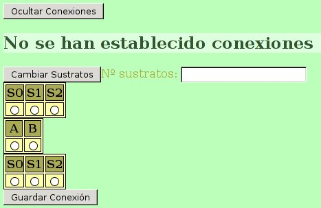
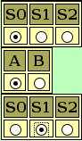
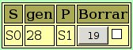
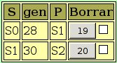

Ya hemos creado los genes, pero no hemos establecido ninguna ruta metábólica con ellos. Si queremos que tengan determinado tipo de interacción, deberemos establecer las posiciones en las que actúan en la ruta.
Para ello pulsamos el botón “Ver conexiones”. Puesto que aún no hemos establecido ningna conexión entre los genes, solo veremos un mensaje indicando esta situación. Debajo veremos un botón rotulado “Cambiar Sustratos” y un campo donde escribir el número de sustratos, una tabla que muestra los dos genes junto con botones de selección, y otro botón rotulado “Guardar conexión”. Al mismo tiempo, el botón para ver conexiones habrá cambiado por otro rotulado “Ocultar Conexiones”.

En primer lugar deberemos contar con los sustratos necesarios para nuestro diseño. Se entiende aquí sustrato en sentido amplio, ya que el sustrato de una enzima puede ser a su vez el producto de otra. Según nuestro diseño, la enzima codificada por el gen A actuaría sobre un sustrato S0 proporcionando el producto S1 que, a su vez sería sustrato de B proporcionando el pigmento final S2. Necesitamos por tanto 3 sustratos para poder definir la ruta metabólica. Por tanto escribiremos un 3 en el campo “No sustratos” y pulsamos sobre el botón “Cambiar sustratos”.
Aparecerán tablas de sustratos similares a la de los genes, y estarán repetidas por encima y por debajo de esta tabla de genes.
Para establecer una conexión, debemos elegir de la tabla de sustratos superior el sustrato que deseemos, a continuación elegimos el gen que codificará la enzima que actuará sobre ese sustrato, y elegiremos el producto de la reacción en la tabla inferior. Por ejemplo, según nuestro diseño debríamos elegir S0 en la tabla superior, A en la tabla de genes, y S1 en la tabla inferior:

Tras pulsar el botón “Guardar Conexión”, ésta aparecerá en la tabla de conexiones:

A continuación crearemos la siguiente conexión entre S1, B y S2, quedando la tabla de conexiones como sigue:

Ya podemos dar por terminado nuestro diseño de un carácter con una herencia epistática recesiva en la que intervienen dos genes con dominancia completa.
Pulsamos entonces consecutivamente sobre los botones: “Ocultar Conexiones”, “Ocultar Genes”, y “Cerrar”, para cerrar definitivmente el carácter en el que hemos estado trabajando.
De ahora en adelante podremos utilizar este carácter en nuestros proyectos.